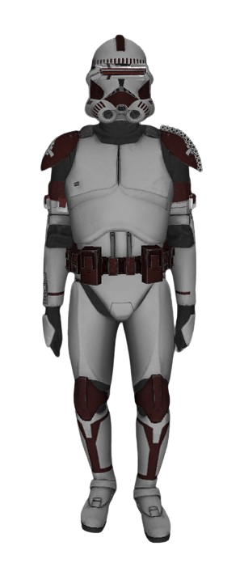
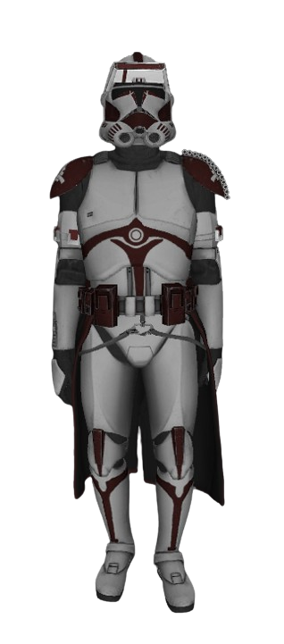
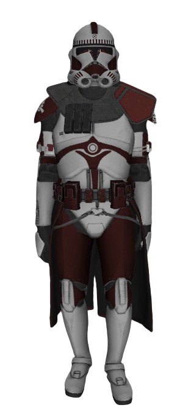
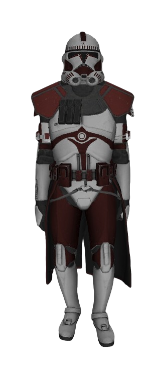
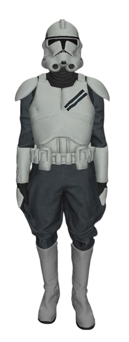

Критерии повышения званий
Курсант ⟶ Оперативник
Обязательные критерии:
- 14 дней выслуги на звании.
- Прохождение "Вступительного Курса"

Оперативник ⟶ Инспектор
Обязательные критерии:
- 14 дней выслуги на звании.
- По решению Командирского состава.

Инспектор ⟶ Следователь
Обязательные критерии:
- 14 дней выслуги на звании.
- По решению Командирского состава.
- Прохождение "Внутренней академии офицеров"

Следователь ⟶ Дознаватель
Обязательные критерии:
- 21 дней выслуги на звании.
- По решению Командирского состава.

Критерии повышения на Осужденого
Обязательные критерии:
